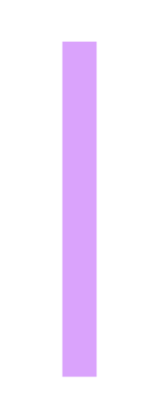

OVERVIEW
001
Project
Overview
Local is a B2C travel companion product that empowers users to explore new places through “local” recommendations that match their travel needs.
Problem
How can we make travel more exciting and help people discover authentic places?
Outcome
I developed a mobile application that enhances travel experiences by connecting users with locals, making it easier to discover authentic places and make the most out of any trip.
FINAL RESULT
009
BACKGROUND
002
Background
Information
While researching travel articles post-COVID-19, I noticed a flood of headlines filled with people eager to travel again and an overwhelming array of recommendations and suggestions on what to do. This surge of information, while exciting, can be quite daunting for travelers who crave genuine and meaningful experiences.
After a quick Google search to the answer: "what is the best way to travel and explore new cities," the first suggestion to pop up was "talk to locals”. As someone who has always been passionate about travel and immersing myself in new cultures, I thought back to what the key ingredients were to some of my best trips, and local recommendations was consistently #1.
Locals provide the best insights into hidden gems, top recommendations, local transit, and the most authentic restaurants. They can help you travel on a budget by showing their top day-to-day places or the best high-end places they go for special occasions. Their knowledge and personal touch can transform an ordinary trip into an extraordinary adventure.
This realization sparked a thought: in a world that has been through so much isolation, what people crave most now is connection. By connecting users with locals, we can make it easier for them to experience authentic culture and make the most out of their trip, which in a post-COVID-19 world is something that is yearned for. This insight inspired the idea for “Local”, a platform where real locals offer trustworthy recommendations.
“Local” isn’t just about finding a restaurant or a hidden spot; it’s about creating a bridge between travelers and the heart of a city. It’s about making travel more personal, more authentic, and ultimately, more fulfilling.
ANALYSIS
002
Competitive
Analysis
I looked at both direct and indirect competitors of travel companion applications. Many apps are geared towards booking flights and hotels and most enticing feature is offering deals and packages. Get Your Guide is great for getting deals on activities, Wanderlog for building an itinerary, and Tripadvisor for researching.
Empathize
I conducted a competitive and feature analysis of travel companion and booking platforms in the market. Then, I surveyed and interviewed people currently planning or thinking of booking a trip to gain insight into their motivation and pain points.

ANALYSIS
002
Research
Findings
To get a baseline understanding of users wants and needs surrounding travelling, I conducted 5 semi-structured interviews. Additionally, 10 individuals completed a survey. Here are the quantitative and qualitative findings.
92%
of respondants find planning activities for a trip stressfull. Many of them expressed that alot of time goes into planning a trip. One of them mentioned that they want to make the most out of visiting a new place and having a detailed itinerary can help them achieve this.
84%
of respondants prefer travelling to a destination where they know a local. Many of the respondants talked about their best trips being when they knew somebody who lived in the destintaion they were visiting.
79%
of respondants want to experience a destinations authentic culture. Many stated that they often plan their trip based on experiecing a destinations local culture. One stated "When I am on a trip, I want to "do as the Romans do".
Asking Real People Their Thoughts
Bella, 32
“I am so excited to travel after COVID-19, but there are so many places to go and I want to make the most out of my trip”

Hiba, 21
“I literally hate planning and researching for a trip, I get so overwhelmed and it makes me so anxious”

Liam, 24
“The best time I ever had while travelling was when I had a local show me around, the food and the activities were so cheap”
Jack, 29
“I spend hours researching where to go, only for half of the places to just be tourist traps or super expensive to visit”
Transforming Pain Points into Opportunities
By conducting comprehensive primary and secondary user research, I uncovered areas of excitement and need that I can leverage to craft a digital travel product.
1. Wants to make the most out of a trip
How might we make it easy for users to make the most out of their trips?
2. Planning trips is a major pain point in general
How might we make planning trips more enjoyable for users?
3. Wants trustworthy recommendations
How might we provide users with the most trustworthy recommendations?
4. Falls for tourist traps and ends up spending a lot of money
How might we protect users from tourist traps and expensive activities?
IDEATION
003
Bringing it to Life
It’s finally time for Ideation. During this process, I utilized the SCAMPER technique and NOW-HOW-WOW matrix to brainstorm a list of possible design solutions. With over 50 ideas, I shortlisted them based on user pains and research. Some ideas generated through this activity were:
1. Make real life locals accessible to give recommendations
2. Offer customized recommendations based on preferences
3. Ensure its easy to browse & scroll
4. Allow users to organize and save locations
Translating Research into Design
Based on the user research, I began to sketch out a travel product with features that solved our users biggest pain points. These features would take all the pain out of planning trips by integrating ways to easily browse top recommendations crafted by trustworthy locals, and would allow users to save and organize their activities all in one place for easy sorting and tracking.

MID FI
004
Mid Fi Designs & Wirefarms
After some initial sketches, I created mid-fi wireframes to build out interactions and flows to test with users. The following shows the mobile version of the application.
TESTING & ITERATIONS
005
Testing, findings & iterations
I conducted a small usability test with 4 individuals. I was looking to test clarity, completion and comprehension of the different features I made. This was tested using four prompts:
1. Sign up for local and navigate through the onboarding process.
2. Save an experience then navigate to your saved locations library.
3. Select a category and explore the filtre feature.
4. Find your local and explore their profile.
Before
The 'save' button on the experience and nav bar was not clear. Some testers were confused about the symbols.
After
The 'save' button on the expereince and nav bar was not clear. Some testers got confused about the symbols, and found the text hard to read.
Before
The 'save' button on the expereince and nav bar was not clear. Some testers got confused about the symbols, and found the text hard to read.
After
The 'save' button on the expereince and nav bar was not clear. Some testers got confused about the symbols, and found the text hard to read.
Before
The 'save' button on the expereince and nav bar was not clear. Some testers got confused about the symbols, and found the text hard to read.
After
The 'save' button on the expereince and nav bar was not clear. Some testers got confused about the symbols, and found the text hard to read.
Before
The 'save' button on the expereince and nav bar was not clear. Some testers got confused about the symbols, and found the text hard to read.
After
The 'save' button on the expereince and nav bar was not clear. Some testers got confused about the symbols, and found the text hard to read.